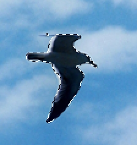
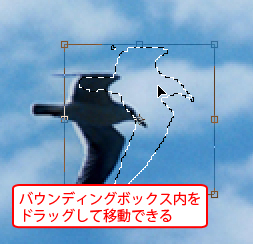

第4章 選択範囲
第2節 選択範囲の応用
本項では、選択範囲の変更、変形する方法を学習します。
第4項 選択範囲の変形
この項で学習する内容
- 境界線の調整以外の選択範囲を調整する機能について理解する。
- 選択範囲を変形させる方法を習得する。
選択範囲の変更
素材フォルダ「PS04」から、素材ファイル4_2_4.psdを開きましょう。
このファイルは鳥の選択範囲をチャンネルに保存しています。
メニューバーの[選択範囲]-[選択範囲を読み込む]を選択し、
チャンネル「鳥の選択範囲」を読み込みます。

選択範囲を《10px》拡張しましょう。
メニューバーの[選択範囲]-[選択範囲を変更]から[拡張]を選ぶと、
[選択範囲を拡張]ダイアログボックスが表示されます。
[拡張量]を《10px》と入力し、[OK]ボタンをクリックします。
選択範囲が10px拡張されました。
［選択範囲を変更］には5種類の変更方法があります。
- ［境界線］：選択範囲の境界線をふち取るように選択範囲を作成します。
選択範囲を変更(境界線)
- ［滑らかに］：選択範囲の境界線のギザギザ感をなくし、滑らかにします。
選択範囲を変更（滑らかに）
- ［拡張］：指定したピクセル量、選択範囲を拡大します。
- ［縮小］：指定したピクセル量、選択範囲を縮小します。
- ［境界をぼかす］：選択範囲の境界線を指定したピクセル量でぼかします。
ワンポイント
ここで紹介した機能はほとんどが、前項で学習した[境界線の調整]で設定できます。
ただ、古いバージョンのPhotoshopでは、[境界線の調整]がなかったため、
メニューから個別に機能を選択して設定していました。
選択範囲の変形
続いて選択範囲の形状を変形させます。
先ほど使用した素材ファイルは[ヒストリーパネル]を使って開いた状態に戻しておき、
再度、「鳥の選択範囲」を読み込んでおきます。
読み込んだ選択範囲を変形させます。
メニューバーの[選択範囲]-[選択範囲を変形]を選択します。
選択範囲に「バウンディングボックス」が表示されます。
「バウンディングボックス」の四隅と四辺の中央にある□マークをドラッグすると、
自由に大きさを変更できます。
「バウンディングボックス内」をドラッグすると、選択範囲を移動させることができます。

「バウンディングボックス」の「四隅の□マーク」より少し外側で
マウスをドラッグさせると選択範囲を回転できます。
この項のまとめ
- [境界線の調整]機能以外の選択範囲の境界を調整する方法
- ・メニューバーの[選択範囲]-[選択範囲を変更]から、選択範囲の境界を変更できる。
・境界線：選択範囲の境界線を縁取るような選択範囲を作成できる。
・滑らかに：選択範囲の境界線のギザギザした状態をなくし、滑らかな状態に調整できる。
・拡張・縮小：選択範囲を指定したピクセル量で拡大または縮小できる。
- 選択範囲の変形方法
- ・メニューバーの[選択範囲]-[選択範囲を変形]から選択範囲にバウンディングボックスを表示させ、形状を変形できる。
・バウンディングボックスの四隅・四辺の□マークをドラッグして、選択範囲を拡大・縮小できる。
・バウンディングボックス内をドラッグすることで、選択範囲を移動できる。
・バウンディングボックスの四隅の□マークの少し外側をドラッグすることで、選択範囲を回転できる。
以上でこの項の学習は終了です。
ファイルは閉じて次の項へ進んでください。